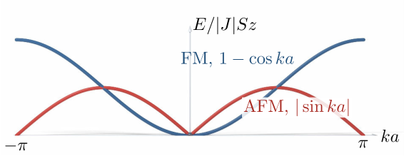

Advanced Quantum Materials 2027 · All lectures · Lecture notes
Session 6. Classical Magnetism and Magnons
6.17 Closing summary
This session started from the Hubbard model of Section 1.14 and from the mean-field method of Session 1 and Session 5, and at the end it used the Chern number (3.4) of Session 3. With them we did the following.
We constructed again the magnetism of the Hubbard model numerically and in full detail. This includes the direct competition between the ferromagnetic and the antiferromagnetic self-consistent solutions, and the Stoner threshold (6.3) that decides whether magnetism appears at all.
We derived the Heisenberg model from the strongly correlated limit of the Hubbard model, with the coefficient \(J=4t^2/U\) (6.4) and its generalization to a lattice (6.5). We also saw how frustration and superexchange modify this simple picture.
We constructed the magnon spectrum from first principles with the Holstein-Primakoff transformation (6.6) and (6.7). We obtained the quadratic ferromagnetic dispersion (6.8) and the linear antiferromagnetic dispersion (6.9). Then we applied the topological methods of Session 3 and Session 4 a third time, and we saw that magnon bands can also be topological.

Both magnon dispersions of this session go to zero at \(k=0\). What is the common reason?
Show the answers
- A. ✓ True
This is true. A uniform rotation of all the spins costs no energy, because the Hamiltonian is invariant under it. The ordered state breaks this symmetry, so a long wavelength rotation costs an energy that goes to zero with \(k\).
- B. ✗ False
This is false. The coupling \(J\) sets the energy scale of the whole band, for example \(8|J|S\) at \((\pi,\pi)\) for \(z=4\). The zero at \(k=0\) comes from the symmetry and not from a missing scale.
- C. ✗ False
This is false. An easy-axis anisotropy \(A\,(S^z)^2\) keeps the magnon neutral but opens a gap of order \(A\). So neutrality alone does not give \(E(0)=0\), and the missing continuous symmetry does.
Every magnet that we have constructed in this session, from the mean-field exchange field to the topological magnon edge states, is a state that breaks time-reversal symmetry. It is a net, staggered or noncollinear spin arrangement that looks different when we run time backwards than when we run it forwards.
Two topics are left open on purpose. The Kitaev interaction of Section 6.12 is a second kind of frustration, which comes from the interaction and not from the geometry, and frustration is the route to a quantum spin liquid in Session 8. The spinon was previewed in Section 6.1 only by name and by its spin-\(1/2\) and charge-neutral quantum numbers. It gets the same full treatment that magnons got here when we move to quantum magnets that do not break time-reversal symmetry. Before that, Session 7 leaves mean field and treats strongly correlated spin chains with tensor networks.
- In Section 7.10 DMRG gives the ground state of the Heisenberg chain without any mean-field step.
- In Section 8.4 frustration on the triangular and kagome lattices gives a quantum spin liquid, and in Section 8.7 the Holstein-Primakoff expansion fails for it.
- In Section 8.9 the spinons of a quantum spin liquid get their own mean-field Hamiltonian.
- In Section 9.5b the Stoner criterion (6.3) comes back as the divergence of the spin response, \(U\chi_0(q,0)=1\).
- In Section 9.9 a frustrated Heisenberg model screens a local magnetic perturbation, with spinons in the place of electrons.